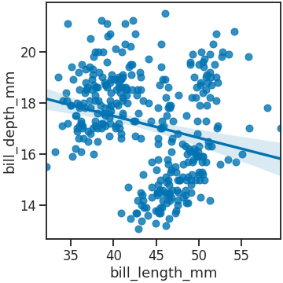
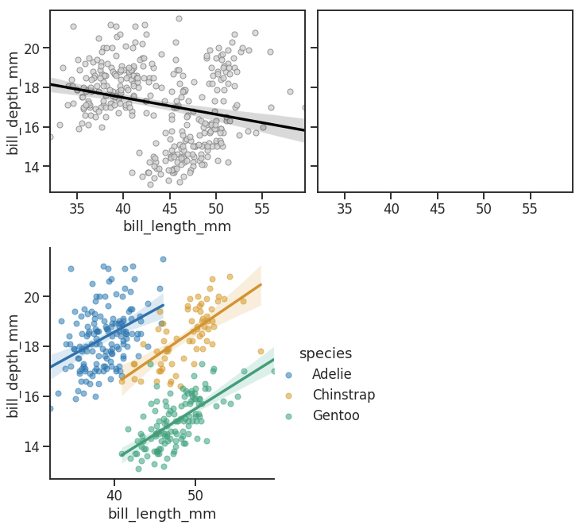

- seaborn에는 regplot이라는 기능이 있습니다.
- 산점도, 회귀선, 신뢰 구간을 동시에 표현해주는 강력한 기능입니다.
- 그리고 같은 결과를 출력하는 lmplot이 있습니다. 같은 점과 다른 점을 확인합니다.
1. seaborn regplot
- seaborn에는
regplot함수가 있습니다. - scatter plot, regression line, confidence band를 한 번에 그리는 기능입니다.
- 따로 그리려면 매우 손이 많이 가기 때문에, seaborn이 Matplotlib보다 우월한 점을 말할 때 빠지지 않는 기능입니다.
1.1. 예제 데이터
- 예제 데이터를 사용해서 직접 그려보겠습니다.
- seaborn에 내장된 penguins dataset을 사용합니다.
1
2
3
4
5
6
7
8
9
10
11
12
13
14%matplotlib inline
import numpy as np
import pandas as pd
import matplotlib.pyplot as plt
import seaborn as sns
# 시각화 설정
sns.set_context("talk")
sns.set_style("ticks")
sns.set_palette("colorblind")
# 예제 데이터 불러오기
df_peng = sns.load_dataset("penguins")
df_peng.head()
1.2. sns.regplot()
seaborn의 다른 명령어들이 그렇듯
sns.regplot도 한 줄로 실행합니다.그림이 담길 Figure와 Axes를 Matplotlib으로 만들고 이 안에 regplot을 담습니다.
그림을 파일로 저장할 때는 Figure 객체 fig에
fig.savefig()명령을 내립니다.1
2
3
4fig, ax = plt.subplots(figsize=(5, 5), constrained_layout=True)
sns.regplot(x="bill_length_mm", y="bill_depth_mm", data=df_peng, ax=ax)
fig.savefig("103_snsreglmplot_01.png")
x와y에 각기 x, y축에 놓일 데이터를,data에 x와 y가 담긴 dataset을 입력합니다.마지막으로
ax에 regplot이 들어갈 Axes 이름을 입력했습니다.
1.3. scatter_kws
- scatter plot의 속성을 지정할 때
scatter_kws매개변수를 사용합니다. - dictionary 형식으로 scatter 객체의 속성 이름과 값을 key와 value로 만들어 넣습니다.
1
2
3
4
5fig, ax = plt.subplots(figsize=(5, 5), constrained_layout=True)
sns.regplot(x="bill_length_mm", y="bill_depth_mm", data=df_peng, ax=ax,
scatter_kws={"fc":"b", "ec":"b", "s":100, "alpha":0.3})
fig.savefig("103_snsreglmplot_02.png")
1.4. line_kws
- scatter 속성을
scatter_kws로 조정했듯, - line 속성은
line_kws로 조정합니다. - line width, line style, alpha를 설정할 수 있습니다.
- 다만 line과 confidence band의 색은 별도의 매개변수
color로 조정해야 합니다.1
2
3
4
5
6fig, ax = plt.subplots(figsize=(5, 5), constrained_layout=True)
sns.regplot(x="bill_length_mm", y="bill_depth_mm", data=df_peng, ax=ax,
scatter_kws={"fc":"b", "ec":"b", "s":100, "alpha":0.3},
color="r", line_kws={"lw":3, "ls":"--","alpha":0.5})
fig.savefig("103_snsreglmplot_03.png")
1.5. confidence band
- confidence band 속성을 제어하기 위해서는 객체를 추출하고 속성을 개별 제어해야 합니다.
- regplot이 그려지는 Axes의 세 번째 객체가 confidence band입니다.
- 첫 번째와 두 번째 객체는 scatter plot, regression line입니다.
ax.get_children()[2]로 confidence band를 추출하고,.set()메소드로 속성을 제어합니다.1
2
3
4
5
6
7
8
9fig, ax = plt.subplots(figsize=(5, 5), constrained_layout=True)
sns.regplot(x="bill_length_mm", y="bill_depth_mm", data=df_peng, ax=ax,
scatter_kws={"fc":"b", "ec":"b", "s":100, "alpha":0.3},
color="r", line_kws={"lw":3, "ls":"--","alpha":0.5})
ci = ax.get_children()[2] # confidence band 추출
ci.set(fc="yellow", ec="orange", alpha=0.8) # face & edge color, alpha 조정
fig.savefig("103_snsreglmplot_04.png")
1.6. sns.regplot & hue
seaborn의 여러 함수에는
hue매개변수가 있습니다.categorical feature의 class별로 다른 색이나 style을 적용해 구분하도록 해 줍니다.
그러나 불행히도
sns.regplot에는hue매개변수가 없습니다.예를 들어 species별로 다른 색과 회귀선으로 표현하려면 for loop 등으로 반복해 그림을 그려야 합니다.
Axes 두 개를 마련해 왼쪽에 전체를, 오른쪽에 species별로 hue를 수동으로 구현한 그림을 그립니다.
1
2
3
4
5
6
7
8
9
10
11
12
13
14
15
16
17
18fig, axs = plt.subplots(ncols=2, figsize=(10, 4), constrained_layout=True,
sharex=True, sharey=True)
# (A) 전체 시각화
sns.regplot(x="bill_length_mm", y="bill_depth_mm", data=df_peng, ax=axs[0], color="k",
scatter_kws={"fc":"lightgray", "ec":"gray", "s":50})
# (B) species별 그룹 시각화
peng_species = df_peng["species"].unique() # 펭귄 데이터셋 중 species 종류 추출
for species in peng_species:
df_s = df_peng.loc[df_peng["species"] == species] # species별 펭귄 데이터 추출
sns.regplot(x="bill_length_mm", y="bill_depth_mm", data=df_s, ax=axs[1], label=species,
scatter_kws={"s":50, "alpha":0.5})
axs[1].legend(loc="center left", bbox_to_anchor=[1, 0.5], frameon=False)
axs[1].set_ylabel(" \n") # gridspec_kw를 사용하지 않고 Axes 간격 띄우기
fig.savefig("103_snsreglmplot_05.png")전체와 부분의 경향이 다른 것을 심슨의 역설(Simpson’s paradox)이라 합니다.
펭귄 데이터셋 중 부리 길이(bill_length_mm)와 부리 폭(bill_depth_mm)에서 심슨의 역설이 관찰되었습니다.
생각보다 매우 흔한 일이지만 분석의 결론을 완전히 바꾸는 일입니다.
데이터를 분석할 때 분할(segmentation)에 주의를 기울여야 하는 이유입니다.
sns.regplot()에는hue기능이 없어서 for loop을 불편하게 돌려야만 했습니다.- 그러나 우리의 seaborn은 같은 기능을 하는 다른 함수로
hue를 제공합니다. sns.lmplot()이라는 이름입니다.
2. seaborn lmplot
2.1. sns.lmplot()
seaborn lmplot은 본질적으로 regplot과 동일합니다. 내부에서
sns.regplot()을 호출하기 때문입니다.그러나
sns.regplot()이 Axes-level function인 반면sns.lmplot()은 Figure-level function이라는 가장 큰 차이가 있습니다.간단하게 그려서 확인해 보겠습니다.
1
2
3
4
5
6g = sns.lmplot(x="bill_length_mm", y="bill_depth_mm", data=df_peng, hue="species",
height=5, aspect=1,
scatter_kws={"s":50, "alpha":0.5})
fig = g.fig
fig.savefig("103_snsreglmplot_06.png")sns.regplot과 문법이 동일하면서도hue가 적용된 plot이 한 줄로 그려졌습니다.그러나 이 명령을 이용해 심슨의 역설을 그리려다가는 이런 일이 벌어집니다.
1
2
3
4
5
6
7
8
9
10
11# Axes 두 개 생성
fig, axs = plt.subplots(ncols=2, figsize=(10, 4), constrained_layout=True,
sharex=True, sharey=True)
# 전체 시각화
sns.regplot(x="bill_length_mm", y="bill_depth_mm", data=df_peng, ax=axs[0], color="k",
scatter_kws={"fc":"lightgray", "ec":"gray", "s":50})
# sns.lmplot() 실행
sns.lmplot(x="bill_length_mm", y="bill_depth_mm", data=df_peng, hue="species",
scatter_kws={"s":50, "alpha":0.5})
sns.lmplot()의 결과물이 미리 만들어 둔 Axes에 들어가지 않습니다.이는
sns.lmplot()이 Figure-level function으로, Figure보다 상위에 있는 Grid라는 객체를 생성하기 때문입니다.그렇기 때문에, 파일을 저장하기 위해서 figure 객체에
g.fig로 접근하는 과정이 필요합니다.
2.2. col & row
- Figure-level function의 장점은 따로 있습니다.
- categorical feature의 class를 FacetGrid로 쉽게 구현할 수 있다는 것입니다.
col과row에 열과 행을 나눌 categorical feature 이름을 입력합니다.1
2
3
4
5
6g = sns.lmplot(x="bill_length_mm", y="bill_depth_mm", data=df_peng,
col="species", row="sex", # species와 sex로 데이터 분할
truncate=False, scatter_kws={"s":50, "alpha":0.5}) # sns.regplot() 사용 매개변수 적용
fig = g.fig
fig.savefig("103_snsreglmplot_08.png")
- 데이터가 sex와 species에 따라 나뉘어 그려졌습니다.
2.3. Figure-level function + Axes-level function
- Figure-level function의 결과물은 Axes에 들어갈 수 없지만,
- Axes-level function의 결과물은 Figure-level function의 결과물에 들어갈 수 있습니다.
sns.lmplot()으로 만들어진 FacetGrid에서 Axes를 추출해sns.regplot()을 적용합니다.sns.regplot()으로 전체 데이터 범위를,sns.lmplot()으로 개별 데이터를 표현하는 식입니다.1
2
3
4
5
6
7
8
9
10
11
12
13
14g = sns.lmplot(x="bill_length_mm", y="bill_depth_mm", # sns.lmplot 생성 FacetGrid 출력
data=df_peng,
col="species", row="sex", # species와 sex로 데이터 분할
scatter_kws={"s":50})
axes = g.axes # FacetGrid에서 Axes 추출
for ax in axes.ravel(): # Axes 순회, 전체 데이터를 배경으로 표현
sns.regplot(x="bill_length_mm", y="bill_depth_mm", data=df_peng,
fit_reg=False,
scatter_kws={"fc":"gray", "ec":"none", "s":50, "alpha":0.3}, ax=ax)
fig = g.fig
fig.tight_layout()
fig.savefig("103_snsreglmplot_09.png")
2.4. sns.lmplot()결과마다 다른 색
sns.lmplot()에는 hue로 나뉘는 데이터에 적용하기 위한palette매개변수가 있습니다.그러나 Facet별로 다르게 들어간 데이터에는
palette매개변수가 적용되지 않습니다.color매개변수도 존재하지 않기 때문에, 개별 객체를 접근해야 합니다.matplotlib 기능을 이용해 hue, lightness, saturation을 조정하는
modify_hls()함수를 먼저 만듭니다.1
2
3
4
5
6
7
8
9
10
11
12import matplotlib.colors as mcolors
import colorsys
def modify_hls(c, dh=0, dl=0, ds=0):
if isinstance(c, str):
c = mcolors.to_rgb(c)
h, l, s = colorsys.rgb_to_hls(*c)
h = h + dh
l = max(min(l + dl, 1), 0)
s = max(min(s + ds, 1), 0)
return colorsys.hls_to_rgb(h, l, s)위 Axes 순회 코드에 Axes마다 다른 facecolor와 edgecolor를 적용하는 코드를 추가합니다.
species에 따라서는 CN을 적용하고 (C0, C1, C2)
sex에 따라서는 hue를 5% 옮긴 색을 입힙니다.
1
2
3
4
5
6
7
8
9
10
11
12
13
14
15
16
17
18
19
20
21
22
23
24
25g = sns.lmplot(x="bill_length_mm", y="bill_depth_mm", # sns.lmplot 생성 FacetGrid 출력
data=df_peng,
col="species", row="sex", # species와 sex로 데이터 분할
scatter_kws={"s":50})
axes = g.axes # FacetGrid에서 Axes 추출
for i, ax in enumerate(axes.ravel()): # Axes 순회, 전체 데이터를 배경으로 표현
scatter, reg, cb = ax.get_children()[:3]
if i > 2:
i -= 3
dh = -0.05
else:
dh = 0
scatter.set(fc=modify_hls(f"C{i}", dl=0.3, dh=dh), ec=modify_hls(f"C{i}", dh=dh), alpha=1)
reg.set_color(modify_hls(f"C{i}", dh=dh))
cb.set(fc=modify_hls(f"C{i}", dl=0.3, dh=dh), ec=modify_hls(f"C{i}", dh=dh))
sns.regplot(x="bill_length_mm", y="bill_depth_mm", data=df_peng,
fit_reg=False,
scatter_kws={"fc":"gray", "ec":"none", "s":50, "alpha":0.3}, ax=ax)
title = ax.get_title()
ax.set_title(title, color=modify_hls(f"C{i}", dh=dh))
fig = g.fig
fig.tight_layout()
fig.savefig("103_snsreglmplot_10.png")
3. 결론
- seaborn의 Figure-level function은 매우 유용하지만 Grid를 출력하는 속성은 종종 간과됩니다.
- seaborn을 사용할 때 발생하는 에러의 대부분이 바로 이 Grid입니다.
- 그리고 이 Grid가 Axes-level과 Figure-level을 결정짓는 가장 큰 차이입니다.
- seaborn을 잘 사용하고자 한다면 주의깊게 살펴볼 필요가 있습니다.